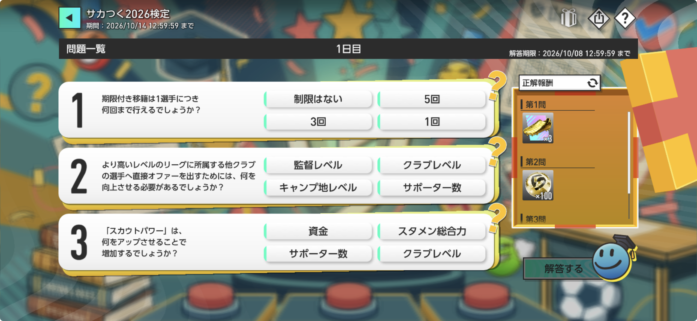
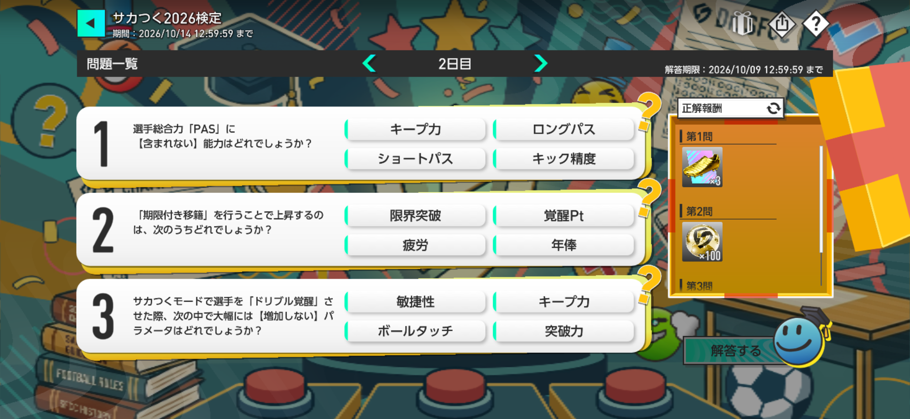
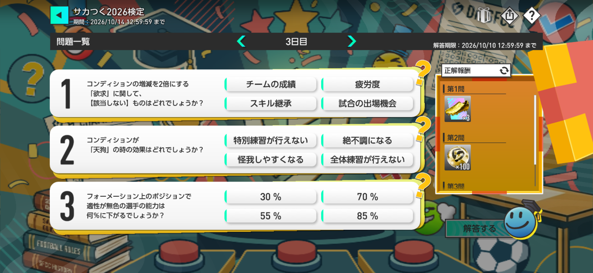
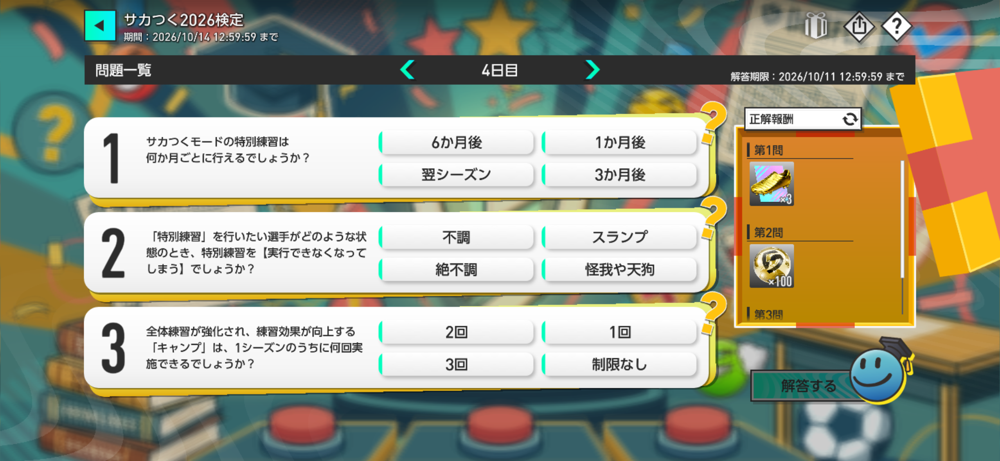
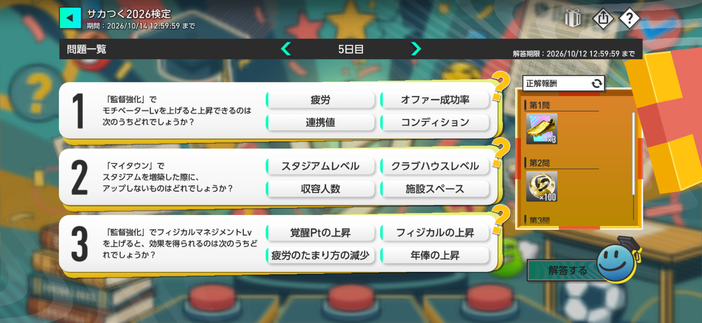
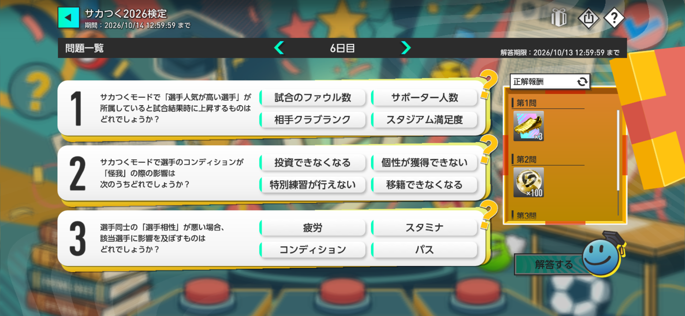
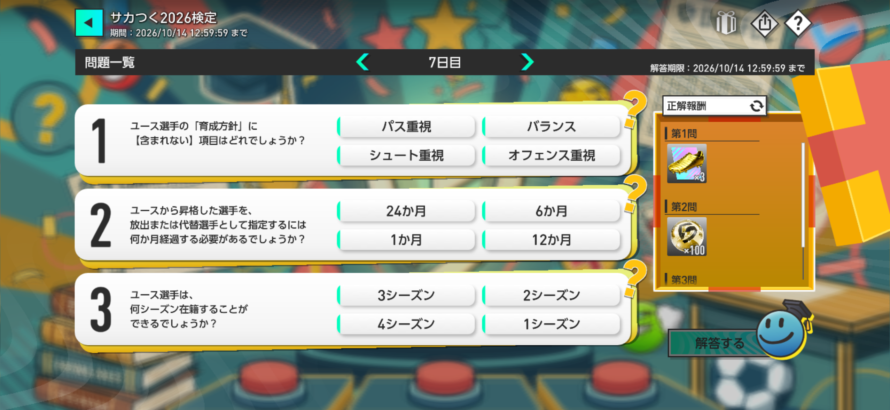

【サカつく2026】第2回サカつく検定の答え・正解まとめ｜1日目～7日目
2026年10月7日から開催中の「第2回サカつく検定」の問題、4つの選択肢、答えを毎日まとめます。7日目までの全21問を掲載中です。答えは各問題の「答えを表示」ボタンから確認できます。
第2回サカつく検定の答えを速報更新
7日目までの全21問・選択肢・回答を掲載しました。答えと解説は初期状態では非表示です。各問題の「答えを表示」を押すと、正解の選択肢と解説を確認できます。
第2回サカつく検定 1日目の答え【10月7日】

- 制限はない
- 5回
- 3回
- 1回
解説：期限付き移籍は同じ選手を何度も繰り返し利用できる育成方法ではありません。監督ノートでは、期限付き移籍は1選手につき1回までと明記されています。
- 監督レベル
- クラブレベル
- キャンプ地レベル
- サポーター数
解説：監督Lvを上げることで人事関連の機能が解放・強化され、直接オファーできる対象も拡大していきます。より高いレベルのリーグに所属する選手へ直接オファーを出すために必要なのは監督レベルの向上です。
- 資金
- スタメン総合力
- サポーター数
- クラブレベル
解説：スカウトパワーはクラブレベルに応じて増加します。直接オファーの成功にも関係するため、クラブLvを上げることは選手獲得能力の強化にもつながります。
第2回サカつく検定 2日目の答え【10月8日】

- キープ力
- ロングパス
- ショートパス
- キック精度
解説：サカつく2026の選手ステータス定義では、PASは「ショートパス・ロングパス・キック精度」の3項目で構成しています。キープ力はDRBを構成するパラメータなので、PASには含まれません。
- 限界突破
- 覚醒Pt
- 疲労
- 年俸
解説：期限付き移籍は選手を他クラブへ送り出して育成するシステムで、複数の移籍先で成長項目として「覚醒Pt」が上昇します。限界値が上昇する移籍先もありますが「限界突破が上昇する」とは表現しない為「覚醒pt」が正解です。
- 敏捷性
- キープ力
- ボールタッチ
- 突破力
解説：監督ノートでは、ドリブル覚醒で大幅に上昇するパラメータは「突破力・キープ力・ボールタッチ」とされています。敏捷性はこの3項目には含まれません。敏捷性はショートパス覚醒や走力覚醒では大幅上昇の対象になります。
第2回サカつく検定 3日目の答え【10月9日】

- チームの成績
- 疲労度
- スキル継承
- 試合の出場機会
解説：監督ノートでは、欲求として「チーム状態」はチームの成績、「体調」は疲労度、「キャリア」は試合の出場機会を重視し、重視していることに関するコンディションの増減が2倍になると説明されています。「スキル継承」は欲求の対象として挙げられていないため、該当しません。
- 特別練習が行えない
- 絶不調になる
- 怪我しやすくなる
- 全体練習が行えない
解説：監督ノートでは、「天狗」になるとコンディションは絶好調で固定される一方、特別練習や選手継承ができなくなると説明されています。選択肢の中では「特別練習が行えない」が該当します。
- 30%
- 70%
- 55%
- 85%
解説：監督ノートのポジション適正では、能力補正は赤100%・オレンジ85%・黄色70%・無色55%です。そのため、適性が無色のポジションで起用した場合は55%まで低下します。
第2回サカつく検定 4日目の答え【10月10日】

- 6か月後
- 1か月後
- 翌シーズン
- 3か月後
解説：監督ノートでは、特別練習は実施してから3か月後に再度実施できると説明されています。そのため正解は「3か月後」です。
- 不調
- スランプ
- 絶不調
- 怪我や天狗
解説：監督ノートでは、怪我中の選手は特別練習を行えず、天狗状態の選手も特別練習や選手継承ができなくなると説明されています。不調・絶不調では特別練習の効果量は下がりますが、実行自体は可能です。
- 2回
- 1回
- 3回
- 制限なし
解説：監督ノートでは、シーズン中に2回キャンプが実施されると説明されています。キャンプでは全体練習が強化され、練習効果量の増加や全体練習メニューLvの上昇などの効果があります。
第2回サカつく検定 5日目の答え【10月11日】

- 疲労
- オファー成功率
- 連携値
- コンディション
解説：監督ノートでは、コンディションは監督アビリティの効果によって変化すると説明されています。モチベーターは選手の状態を整える系統の監督強化で、選択肢の中では「コンディション」が該当します。
- スタジアムレベル
- クラブハウスレベル
- 収容人数
- 施設スペース
解説：監督ノートでは、スタジアムを増築すると最大収容人数と施設スペースが増え、スタジアムLvも上昇すると説明されています。一方、クラブハウスはスタジアムLvが上がることで増築できるようになりますが、スタジアム増築だけでクラブハウスLvが直接上がるわけではありません。
- 覚醒Ptの上昇
- フィジカルの上昇
- 疲労のたまり方の減少
- 年俸の上昇
解説：監督ノートでは、監督アビリティによって選手の疲労をたまりにくくしたり、疲労回復速度を上げたりできると説明されています。フィジカルマネジメントLvの効果として、選択肢では「疲労のたまり方の減少」が該当します。
第2回サカつく検定 6日目の答え【10月12日】

- 試合のファウル数
- サポーター人数
- 相手クラブランク
- スタジアム満足度
解説：監督ノートでは、選手人気が高い選手が所属していると一般観客数やHOMEサポーター観客数が増えるほか、試合結果でサポーター人数が増えやすくなると説明されています。そのため正解は「サポーター人数」です。
- 投資できなくなる
- 個性が獲得できない
- 特別練習が行えない
- 移籍できなくなる
解説：監督ノートでは、怪我状態の選手は練習や試合に出られず、パラメータ経験値を獲得できず、特別練習も行えないと説明されています。選択肢の中では「特別練習が行えない」が該当します。
- 疲労
- スタミナ
- コンディション
- パス
解説：監督ノートでは、選手相性が良い選手がいるとコンディションが上昇し、相性が悪い選手がいるとコンディションが低下すると説明されています。相性効果による変化量は、相性が良い・悪い選手の人数に応じます。
第2回サカつく検定 7日目の答え【10月13日】

- パス重視
- バランス
- シュート重視
- オフェンス重視
解説：監督ノートでは、ユースの育成方針は対応する全体練習メニューで得られるパラメータ経験値に影響し、「バランス」は全練習メニューを同程度に伸ばす方針と説明されています。当サイトで扱う全体練習の系統にはシュート・パスなどがありますが、「オフェンス重視」という育成方針は含まれないため、正解は「オフェンス重視」です。
- 24か月
- 6か月
- 1か月
- 12か月
解説：監督ノートでは、ユースからトップ昇格して獲得した選手は、入団から12か月経過するまで放出できず、代替選手としての移籍オファーも発生しないと説明されています。そのため正解は「12か月」です。
- 3シーズン
- 2シーズン
- 4シーズン
- 1シーズン
解説：監督ノートでは、ユース選手は3シーズンの間在籍でき、トップ昇格させずに3シーズンが経過した選手はユースリストから抹消されると説明されています。そのため正解は「3シーズン」です。
このページの更新方針
- 第2回サカつく検定は、1日目～7日目の全21問を掲載し、全問の公式正解を確認済みです。
- 公式画像から問題文・4つの選択肢を転記し、表記を勝手に変更しません。
- 監督ノートや当サイト保有データに明確な根拠がある場合は、該当内容を確認して速報回答を掲載します。
- 監督ノートや当サイト保有データだけで判断できない場合は、推測で正解を断定せず「確認中」とします。
- ゲーム内の公式結果を確認後、回答ステータスを「公式正解確認済み」に更新します。